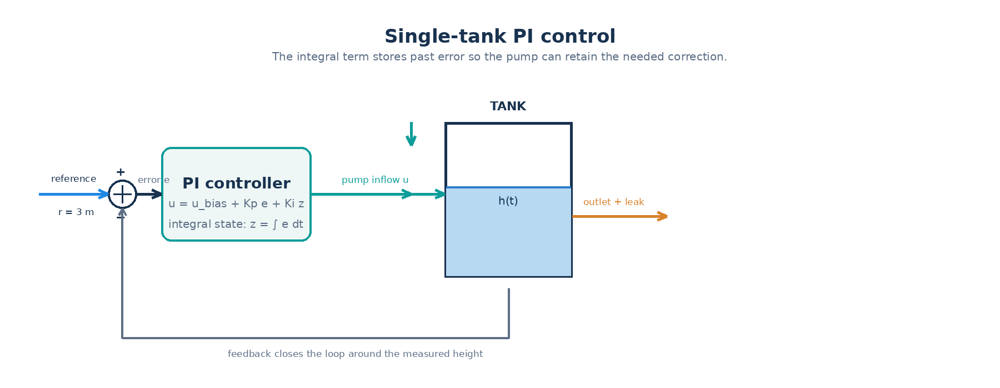
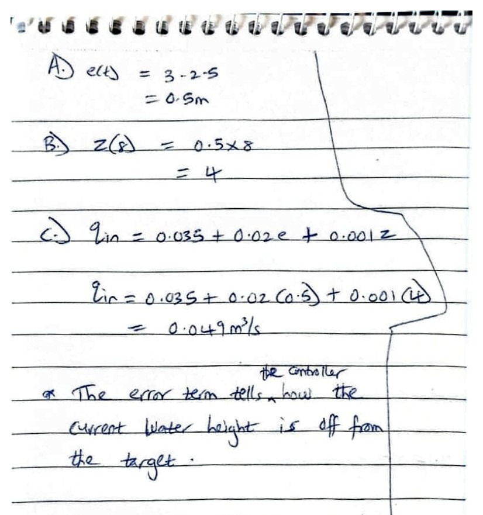
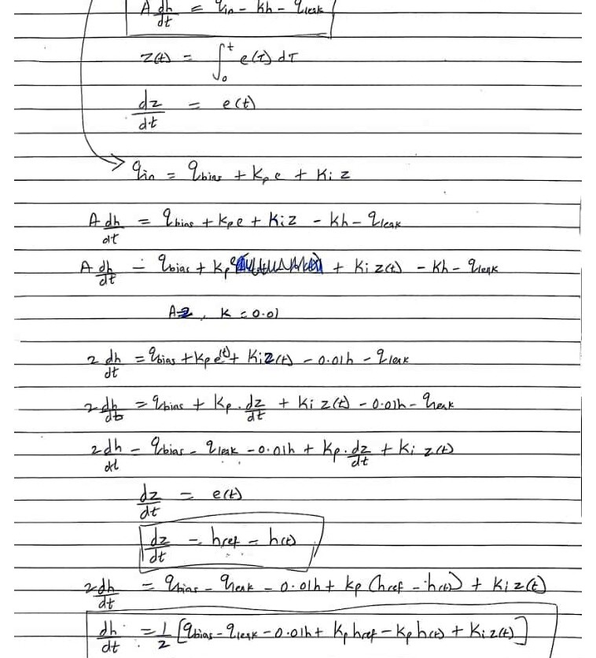
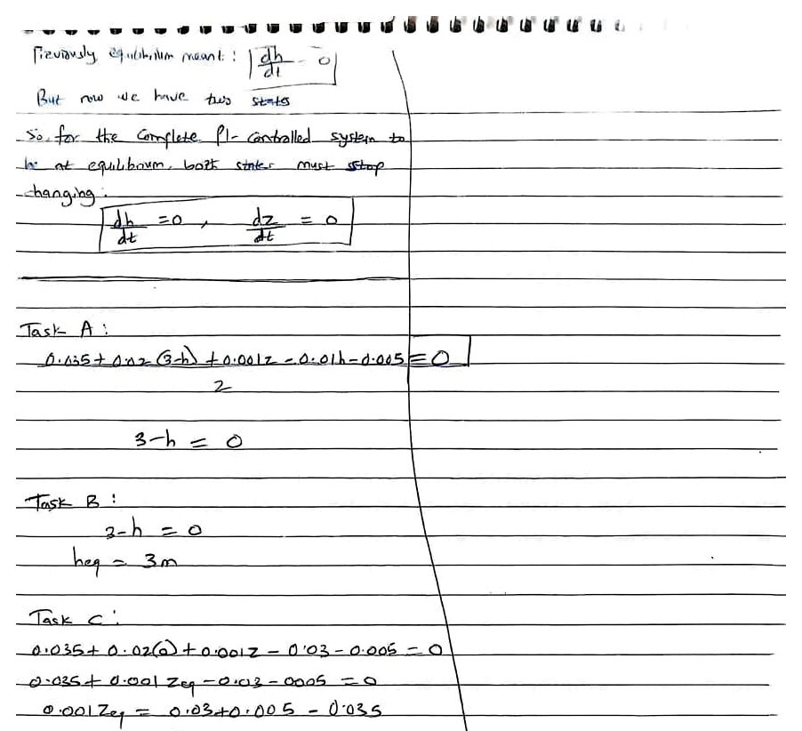
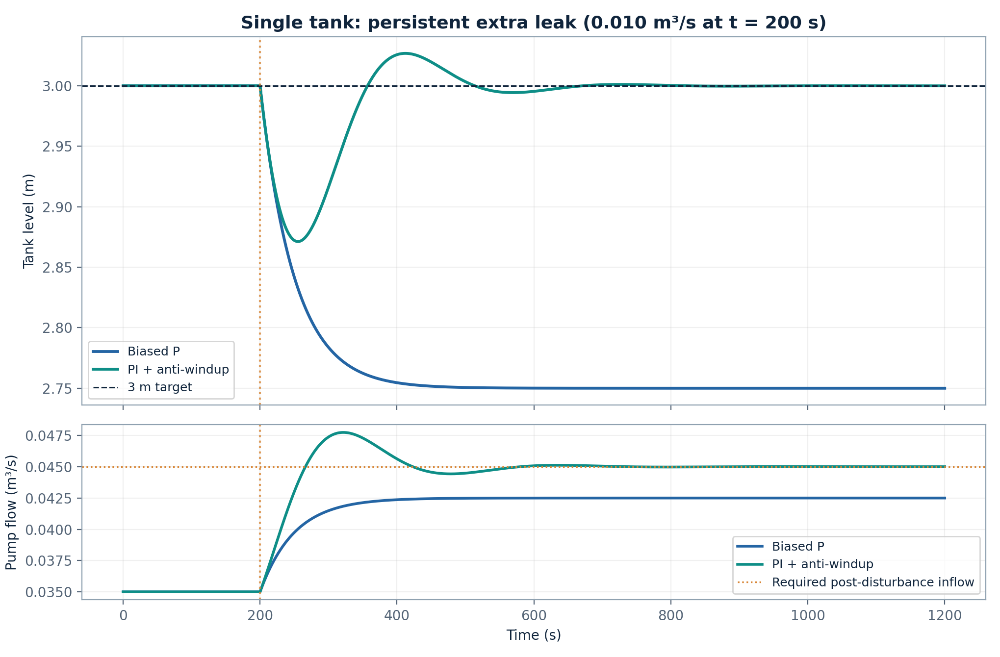
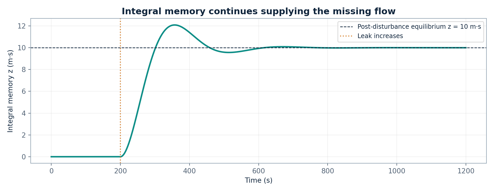
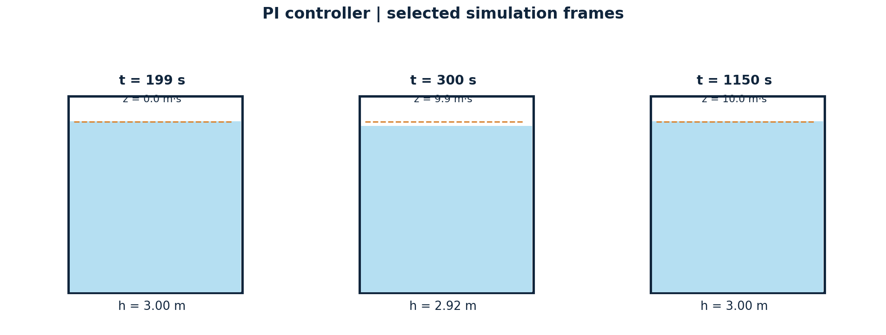

02 · Single tank / PI / Engineering report
PI control: turning persistent error into corrective memory
A second state makes the pump retain the correction needed for a constant unknown leak, without demanding a permanent height offset.
Open the interactive companion →
1. From P limitation to PI objective
Under biased P control, an added 0.010 m³/s persistent leak moved the steady water level from 3.00 m to 2.75 m. The PI objective is to restore 3.00 m while retaining the added pump flow necessary to replace the leakage.
2. Introduce integral memory as a state
The integral state z has units of m·s. If the height remains 0.5 m below target for 8 s and z begins at zero, then z(8) = 4 m·s. It is an accumulated quantity; z need not vanish when e becomes zero.

The report illustration uses Kp = 0.03 m²/s, Ki = 0.001 m/s², a 0.035 m³/s nominal bias, and a 0–0.10 m³/s actuator range.
3. The coupled state equations
The controller changes the original one-state physical model into a two-state closed-loop system (h, z). Both derivatives must be evaluated at the same old state before a simultaneous Forward Euler update.

4. Why integral action removes the offset
At the desired equilibrium, h = 3 m and e = 0, yet the pump must replace normal losses and the increased leakage. With an extra 0.010 m³/s leak, the required inflow is 0.045 m³/s. The difference from the bias must come from Kiz.
The integral state is not an error that must disappear. In the disturbed equilibrium it is the extra memory needed to hold the level at the target. This requires a stable loop and sufficient pump authority.

5. Forward Euler and anti-windup
Conditional anti-windup prevents z from moving farther into saturation while still allowing it to unwind when the error reverses.
e = reference - h
raw = bias + kp * e + ki * z
u = np.clip(raw, 0.0, pump_max)
blocked = (raw >= pump_max and e > 0) or (raw <= 0.0 and e < 0)
zdot = 0.0 if blocked else e
hdot = (u - k * h - leak) / area
h_next = h + dt * hdot
z_next = z + dt * zdot6. Independently regenerated disturbance illustration
Both P and PI runs begin at h = 3 m, z = 0 with Kp = 0.03. Extra leakage of 0.010 m³/s starts at 200 s. PI uses Ki = 0.001 and Forward Euler uses Δt = 0.1 s.



| At 1,200 s | P controller | PI controller |
|---|---|---|
| Water height | 2.7500 m | 3.0000 m (approx.) |
| Executed inflow | 0.04250 m³/s | 0.04500 m³/s (approx.) |
| Integral memory z | Not used | 10.0 m·s (approx.) |
7. Verification boundary and next step
The equilibrium values are analytic. The figures use the stated report illustration parameters. The repository implementation is verified separately and uses its documented default disturbance scenario.
- PI can remove persistent steady-state offsets if the equilibrium is feasible and stable.
- The stored state z may remain nonzero when the current error is zero.
- Anti-windup is a safeguard for actuator saturation, not a way to exceed physical pump capacity.
PYTHONPATH=projects/01-water-tank/src python -m water_tank.pi_control
PYTHONPATH=projects/01-water-tank/src \
python -m unittest discover -s projects/01-water-tank/tests -v